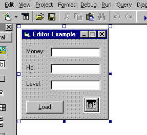
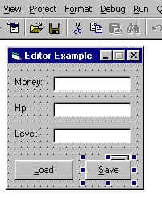

Save
State Editors Programming v2.5
by: The_Fake_God
Last updated: September, 2001
Things you need before starting
A copy of Visual Basic
- http://www.retrobase.com/fakegod/downloads
UgeTab's Save State Hacking Guide (if you don't know
how to hack states)
- http://www.angelfire.com/nc/ugetab/
Index
Introduction
Finally I decided to update this doc. Version 2.5 is a total remake from the last "plain text" version. I added a lot of stuff: basic programming, more techniques, "how to make your editors look nice", advanced controls support, etc. I can guarantee that after reading this document you앏l be able to create a full featured Save State Editor. Everything here is fixed to the best of my knowledge and experience with editors. Well, make your best effort and read/analyze every piece of code.
Programming Languages
There압 enough material to write entire books about this topic, however you won앖 need a single page of theory to make editors. This section was created to show you the basic structure of a program.
There are three types of programming languges: machine code (hex, binary), Low Level Languages (6502, Z80, 486, etc.), High Level Languages (C++, Pascal, Basic, etc.). What's the difference? Well, I don't if anyone still program in machine code (maybe an old 50's programming enthusiast...) Low Level Languages (well known as Assembly) are used in several systems and programs. I.E a NES rom is coded in 6502, a GB one uses Z80 (well sort of), 486: dos/windows programs(for example). Assembly is the fastest language around. High Level Languages are the ones in which you can make readable codes. I think C++ is the fastest HHL. These languages (HLL) are converted to Assembly through a compiler. Visual Basic is not a full compiled language, that's why it압 sooo slow. Every VB program needs something called Microsoft Visual Basic Virtual Machine (MSVBVMx.DLL). This library is some kind of VB<->System translator.
It압 important to know at least the basics of the theory, this little lesson about PL, will help you understand your programs.
The Basic of Visual Basic
If you don앖 know how to create/save/open projects, I suggest you to learn before continuing. Visual Basic has a collection of objects named Controls. There are a lot of different controls, this is a list of the most common ones:
| Control Name | Description |
| Form | Window that holds controls |
| TextBox | Box to retrieve input from user |
| PictureBox | Painting Surface |
| Label | Static Text |
| ComboBox | Dropdown List |
| ListBox | A simple list |
| Frame | Area created to group controls |
| ChechBox | Simple On/Off switch |
| Option | Like the chkbox, it works as part of a group |
| CommandButton | Simple "Click Me" button |
The Form isn앖 a control, it압 a dialog box. Each one of them(controls) is determined by its own characteristics. For example, think of your house as a VB object:
MyHouse.Address
"Address" is a property of your house. Some controls have "mini-controls" inside them:
MyHouse.MyRoom.Size
"MyRoom", subitem. "Size" Subitem's property.
Make a simple program to mess around with object properties. It will help you understand further examples.
Variables
This is one of the most important lessons. Take a look at this chart:
| Type | Memory | Range |
| Byte | 1 Byte | 0 to 255 |
| Integer | 2 Bytes | -32,768 to 32,767 |
| Long | 4 Bytes | -2,147,483,648 to 2,147,483,647 |
| String | ? Bytes | ASCII Characters |
| Boolean | 2 Bytes | True or False |
There a few more variable types that you�re not going to use in Save State Editors programming. Remember the size of each one.
File I/O
If you have programmed in other languages you will find big differences when using Basic. In VB, you don't need interrupts or classes. Indeed VB File I/O is pretty straight forward. These are VB I/O Access modes:
Input - Read only mode (I)
Output - Write only mode (O)
Random - Data types, sized block (you�re not going to use it)
Binary - Read/Write Binary. This is the mode that you�re going to use.
Binary Mode
Binary mode can be called like this:
| ' Open File / Mode: Binary Open "C:\MyFolder\MyFile.xyz" For Binary As #1 ' Close the file |
The "#1" at the end is the file number. It can be any byte value(0/255). A very important thing to remember is to close the file after you used it. Binary mode has two basic methods we�re going to cover:
Get - Syntax is: Get [Filenumber], [Address], [Variable]
Put - Syntax is: Put [Filenumber], [Address], [Variable]
You can call these methods like this:
| ' Open File / Mode: Binary Open "C:\Zsnes\Mario.zst" For Binary As #1 ' Allocate memory for one byte ' Get Life ' Edit the value of Life ' Put Life ' Close the file |
Dim is a keyword used to "Dimension" a variable to a type. You can change the type to anything (valid!) you want. "Get #1, 123456 + 1, Life" Ok, your program will get 1 byte of data (size of Life) from the offset 123456. The "+ 1" thing is used because a hexeditor (or any other program you use to find offsets), reads starting at offset 0, Visual Basic starts at 1. It압 better to leave the "123456 + 1" instead of "123457" beacuse it압 easier to debug (but it압 still the same). The Cbyte() function returns a valid size according to the sent variable (CInt() and CLng() are also valid). Now you know enough to create a simple save state editor.
Making the Editor Step by Step
There are some basic steps you must follow in order to make an editor. First of all, you need to get the name of the file you�re going to edit. You can take different paths (API, Simple Dialog with FileBoxes, CommonDialog Control). I앐 going to explain the CommonDilaog control one.
Common Dialog Control
Add the control to your project (CTRL+T). "Microsoft Common Dialog Control x.0" Once you have added it to your main form, make this changes:
.Name = dlgMain
.Filter = Zsnes Save States (*.zs*)|*.zs*
.CancelError = True
Now that you have a way to get the file, make it work. Put a CommandButton somewhere in your form.
.Name = cmdLoad
.Caption = &Load
Open the code editor (double click on cmdLoad) and go to cmdLoad_Click():
| ' Prevent the CancelError On Local Error Resume Next ' Show the File Dialog ' If the user pressed ok then... ' Open the File ' Close the file End If |
Everytime you click on cmdLoad it will open and close the selected file. You need something to edit! Go to the "General" section of your form code and add these lines:
| Dim Money As
Long Dim Hp As Integer Dim Level As Byte |
You have the memory, but you still need someplace to display the data. Add three TextBoxes:
Name = txtMoney
Name = txtHp
Name = txtLevel
Change the look of your form:

Now change the cmdLoad_Click() Subroutine:
| ' Prevent the CancelError On Local Error Resume Next ' Show the File Dialog ' If the user pressed ok then... ' Open the File ' Get the Money ' Get the HP ' Get the Level ' Close the file End If |
Test this program with a DeJap's Patched Tales of Phantasia State. Now, lets save the changes. Add a CommadButton with the following properties:
.Name = cmdSave
.Caption = &Save
Put it somewhere in the form, like this:

Now open up the code editor and make the cmdSave_Click() subroutine look like this:
| Private Sub cmdSave_Click() ' Open the selected file Open dlgMain.FileName For Binary As #1 ' "Put" the Money, use CLng() Put #1, 8390 + 1, CLng(Val(txtMoney)) ' "Put" the Hp Put #1, 30435 + 1, CInt(Val(txtHp)) ' "Put" the level Put #1, 30443 + 1, CByte(Val(txtLevel)) ' Confirmation Message MsgBox "Saved!", vbExclamation, "Saved!" ' Close the File Close #1 End Sub |
Since you already got a filename, you don앖 need to get it again. Open the same file and "Put" the changed stuff. Use always the TypeCast and Val() functions since you have to size every value to your needs, also the user can type "xlksj" instead of a valid number, and you don앖 your program to crash, do you?. If Val() reads an invalid number the returned value will be zero.
I found the offsets using Universal Game Editor (decimal base editor), if you use hexworkshop or anyother hexediting program to find the offsets, you can use the "&H" prefix to use hexadecimal numbers. Examples:
Put #1, &H320A + 1,
MyVariable
Put #1, &HFFFF + 1, CInt(&HFFFF) ' CInt(&HFFFF) will return -32767
Put #1, &HC04E + &H1, CByte(&HFF) ' Which is actually a bit stupid
Advanced Data Loading/Saving
In the variables lesson you learned the ranges of each data type. A lot of games use different ranges and types of variables. First of all you have to know the difference between a signed variable and an unsigned one.
Signed
Unsigned
Byte -127/127
0/255
Integer -32767/32767 0/65535
You can앖 read a 65535 directly through VB (at least not as an integer). You have to convert what you have, from signed to unsigned. Use the following functions to convert the values, these functions were written by Che Weng:
| ' Copy these to a module Public Sub SaveInteger(offset, value, location) Dim Sval As Byte Dim A, B, C A = Hex(value) If Len(A) = 1 Then A = "000" & A If Len(A) = 2 Then A = "00" & A If Len(A) = 3 Then A = "0" & A B = ConvertHex(Left(A, 2)) C = ConvertHex(Right(A, 2)) Open location For Binary As 1 Put #1, offset, CByte(C) Put #1, offset - -1, CByte(B) Close 1 End Sub ' Usage Example: ' Call SaveInteger(12345 + 1, val(txtLevel), dlgMain.FileName) Function
ConvertHex(h$) As Currency Public Function GetInteger(value) |
Another example is the way Squaresoft games store their money variables. Instead of using 4 bytes to make a long integer they set it to three bytes making 9999999 a reasonable number for your money. I wrote three functions to solve the problem:
| ' Copy these to a module Public Sub SaveTByte(offset, value, ByVal file) ' Disarm the value temp = cHex(Hex(value), 6) Open file For Binary As #1 Put #1, offset, CByte("&H" & Right(temp, 2)) Put #1, offset + 1, CByte("&H" & Mid(temp, 3, 2)) Put #1, offset + 2, CByte("&H" & Left(temp, 2)) Close #1 End Sub ' Usage Example: ' Call SaveTByte(12345 + 1, val(txtMyVal), dlgMain.FileName) Public Function cHex(sHex As String, lenght As Byte) As String ' BYTE If lenght = 2 Then If Len(sHex) = 1 Then sHex = "0" & sHex End If ' Integer If lenght = 4 Then If Len(sHex) = 1 Then sHex = "000" & sHex If Len(sHex) = 2 Then sHex = "00" & sHex If Len(sHex) = 3 Then sHex = "0" & sHex End If ' Three byte If lenght = 6 Then If Len(sHex) = 1 Then sHex = "00000" & sHex If Len(sHex) = 2 Then sHex = "0000" & sHex If Len(sHex) = 3 Then sHex = "000" & sHex If Len(sHex) = 4 Then sHex = "00" & sHex If Len(sHex) = 5 Then sHex = "0" & sHex End If ' Set the return value cHex = sHex End Function Public Function tByte(int1, byt1) As Long lo = cHex(Hex(int1), 4) hi = cHex(Hex(byt1), 2) lo1 = Left(lo, 2) lo2 = Right(lo, 2) If hi = "00" Then tByte = CLng("&H" & lo) Else tByte = CLng("&H" & hi & lo1 & lo2) End If End Function ' Usage Example: Get #1, 1234 + 1, MyInt Get #1, 1234 + 2, MyByte txtMoney = tByte(MyInt, MyByte) |
Now that you know how to edit those variables, add a bit more functionality to your editors by improving the GUI.
Advanced Editor Creation
The advanced editor creation resides mainly in the GUI (graphical user interface) and the system you use to Load/Data. First I앐 going to discuss the different ways to Load/Data.
The Controls Array
Create a new project and add a Label to it. Now right click on it and select copy, right click on your form and select paste. A message box will pop up asking if you want to create a control array. Click on yes/ok and check the name of your first Label. Label1(0) and the second one: Label1(1). Repeat the operation and VB won앖 ask, it will add a control named Label1(2). The number enclosed in parentheses represents the array index, so if you want to have access to any of the array controls use that number. Now, all the Message Handlers (Click(), MouseUp()...) will have an extra parameter: Index As Integer. This means that you앏l recieve the array index. So you can set up If...End If forks like this:
If Index = 0 Then.....
ElseIf Index = 6 Then......
End If
I suggest you to use control arrays when coding RPG's editors. This will make your code faster and more effective.
The For...Next Loop
I guess you already know how to use it, if not this is (briefly) how it works:
For [initialize index] To [Upper
Bound] Step #(optional)
.
.
.
Next [index]
Example:
For i = 0 to 1000
Form1.Caption = i
Next i
You can take advantage of this in most RPG games. These games (in their vast majority) store the character's data in a single block of bytes (which size varies depending on the amount of characters). So if the HP is stored in offset 100, the next character's hp is stored in offset 200 and so on you can use something like this:
k = 0
For i = 100 to 600 Step 100 ' Assuming you have to edit 6 chrs
Get #1, i + 1, MyVar
txtHP(k).Text = MyVar
k = k + 1
Next i
The process goes like this, Get the variable a the selected offset and copy it to a control(index) (part of an array). The "i" variable is incremented by 100.
99 of all Items
Use a For...Next Loop to solve the problem (Unless you want to type 99 Put #1.....) Example:
k = 0
For i = 3000 to 3099
Put #1, i + 1, CByte(k)
Next i
Repeat the process for the amount of items and you�re off.
Other methods
These methods are a bit tedious sometimes, when you make large editors the code gets hard to debug. There are more effective ways to Load/Save data. I just developed a new method based on my newly gotten C++ skills :P It allowed me to code the FF3 editor in less than two hours, fast and absolutely no bugs! I will post it on this doc as soon as I get more into it, since it압 really beta (at least in my programs).
Making your program look better
I suggest you to make extensive use of other controls like the tabs, progress bars, image lists, etc. I앐 going to cover only tabs and p. bars.
Tabs
There압 not too much to explain. The code I use is the one created by the VB Application Wizard. Open up the "The Eye of The Beholder" code and copy the tbsOptions_Click() and tbsOptions_KeyDown message handlers. The code is based on a control array of picture boxes, used to hold a set of controls. The tabs show/hide the pictures according to the clicked index.
You can add little 16x16 images to the tabs. Make sure that the images are all the same size, also save them as 24-bit bitmaps with the same mask color or the mask color won앖 work. Add an ImageList to your form and add your images to it. Change the mask color to match the one you have. Now in the tabs "Custom" Dialog (properties | custom) set the ImageList to the one you just added. Now you can select the image index on the tabs (individual clickable little tabs) properties sheet.
Progress Bar
I use this control as Life Meter bars. If you have used my Zelda 3 Editor, you might have seen the Magic Meter Editor, it uses a progress bar. These bars make your GUI look better, it압 a more "gaming" touch. Example:
' Add a ProgressBar and name it pbLife
' Add a TextBox and Name it txtLife
Sub txtLife_Change()
If val(txtLife) < 1000 then pbLife.Value = val(txtLife)
End Sub
That압 all, every time you change the value in the textbox, your progress bar will be updated too.
More Graphical Tips
Try to use stuff from the game you�re editing (see my FF3 Item Editor). Add little pictures and this related to the game, also pick a good icon (you better rip it out from the game).
Links
Credits
Thanks to: Ugetab, Maxim, War Mike(for giving me the excuse I needed to update this doc :D), Che(for teaching me how to do editors), Gil-Galad(for teching me how to decompress Snes9x states), zophar.net.
The_Fake_God - The_Fake_God@hotmail.com
http://www.retrobase.com/fakegod